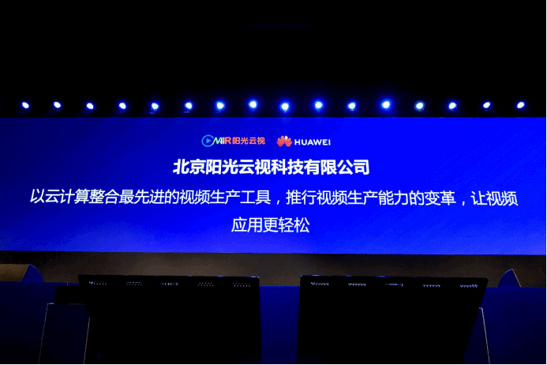

阳光云视&华为云战略合作升级，共同赋能视频化生态发展
3月21日，华为中国生态合作伙伴大会在福州隆重召开。阳光云视成为首批华为云战略合作伙伴，发布ONAIR产品矩阵，重磅升级媒体云系列，全新推出视频云系列。首次亮相的博识企业知识管理云服务，标志着企业视频化应用时代的到来！

携手华为云 升级战略合作伙伴
作为华为云第一批领先级解决方案合作伙伴，再到成为战略合作伙伴，阳光云视始终坚持以客户为中心，以领先业界的视频技术，开发、交付、运营即开即用的云服务产品。
云+AI 智慧融媒进行时
生态大会上，阳光云视推出的基于PaaS 3.0打造的 “大数据+人工智能”智能媒体大数据决策分析平台，能提供大量底层工具和能力。基础能力服务，可充分满足省级、县级平台业务需求；运用AI智能，提供人脸识别、智能封面、智能拆条、OCR识别，语意识别、智能推荐等智能服务，提升业务效率；同时可提供运营支撑系统，统一用户、按量计费、弹性扩张、可管可控，支持省级平台向县级提供支撑。
阳光云视，率先将AI能力整合到融媒体建设中，我们参与了《县级融媒体中心省级技术平台规范要求》和《县级融媒体中心建设规范》两项规范的全程制定，并依托国家级、17个省级以及大量的市县级融媒体建设经验，精心打造了“轻建设、重运营、富生态”的县级融媒体中心整体解决方案及省级平台融合媒体技术解决方案。
阳光云视·视频云事业部总经理曹飞《做智慧媒体的行动派》主题分享——
5G助推 赋能视频生态
大会期间，阳光云视重磅发布《2019-2020年·视频应用趋势白皮书》，面向视频行业、视频应用做出洞察，5G时代视频生态三大趋势：
1.“大”视频技术
5G助推下，4K/8K从概念进入到落地阶段，然而4K/8K的大规模应用以来整个生态的迭代，从基础设施、网络到终端硬件、4K内容制作-剪辑-播放、商业模式全部的适配，才能产生真·4K落地，否则还是挂羊头卖狗肉。
阳光云视在4K大码流直播领域技术积累深厚，已经与华为成功开展过落地合作。
2．“大”视频场景
从360全景直播，到VR/AR，我们认为视频正处在从平面流媒体向空间流媒体发展的过渡期，并且在5G时代，实时的VR/AR流媒体产品将进入大众消费阶段。
在5G时代，VR/AR产品体验将会提高至大众消费水平，用实时VR流开一场发布会，就不再需要准备呕吐袋了。
按照目前中国5G推广的热情和力度，可以期待实时的VR流媒体服务进入标准化、产品化进程不远了。
3．“大”视频应用
视频早已从“记录”“娱乐”“通讯”等标签的框架中解脱出来，在更广阔的领域里探索生机。“视频+”的需求不仅在互联网产品上有社交、游戏，在企业内部应用场景更加广泛，问题锁定，岗位经验传承、异地沟通协作、交接工作等需求，单纯的文档、线下培训并不能生动详实的传承，云时代呼吁云学习、智慧培训，这些都大大拓展了视频应用的边界！